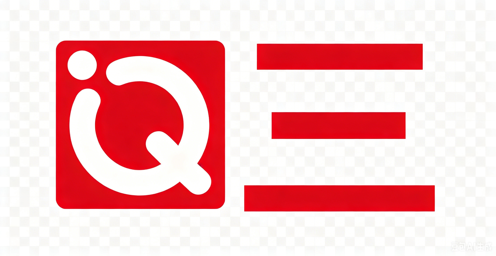

<nav class="navbar navbar-expand-lg navbar-light bg-light">
  <div class="container-fluid">
    <a class="navbar-brand" href="#">
         <!-- 不会自动调整图片大小 -->
    </a> 
    <!-- 如果触发 navbar-toggle 会如何显示 botton: -->
    <button class="navbar-toggler" type="button" data-bs-toggle="collapse" data-bs-target="#navbarSupportedContent">
        <span class="navbar-toggler-icon"></span>
    </button>
    <!-- END button -->
    <div class="collapse navbar-collapse" id="navbarSupportedContent"> <!-- 导航栏中除 .navbar-brand 的部分, 可折叠 -->
      <ul class="navbar-nav me-auto mb-2 mb-lg-0">  
        <!-- navbar-nav 子项 collapse 展示, me-auto margin-end auto 将同级的form 挤到最右, mb-2 margin-bottom 0.5rem  mb-lg-0 大屏时 margin bottom  0rem -->
        <li class="nav-item">
          <a class="nav-link active" href="#">Home</a> <!-- .active 高亮显示 -->
        </li>
        <li class="nav-item">
          <a class="nav-link" href="#">Link</a>
        </li>
        <li class="nav-item dropdown">
          <a class="nav-link dropdown-toggle" href="#" id="navbarDropdown" data-bs-toggle="dropdown">
            Dropdown
          </a>
          <ul class="dropdown-menu">
            <li><a class="dropdown-item" href="#">Action</a></li>
            <li><a class="dropdown-item" href="#">Another action</a></li>
            <li><hr class="dropdown-divider"></li>
            <li><a class="dropdown-item" href="#">Something else here</a></li>
          </ul>
        </li>
        <li class="nav-item">
          <a class="nav-link disabled" href="#" tabindex="-1">Disabled</a> <!-- tabindex 隔绝键盘操作 -->
        </li>
      </ul>
      <form class="d-flex"> <!-- 发送请求到后端, 用来检索已有页面 -->
        <input class="form-control me-2" type="search" placeholder="Search"> <!-- me-2 margin em 2 -->
        <button class="btn btn-outline-success" type="submit">Search</button>
      </form>
    </div>
  </div>
</nav>